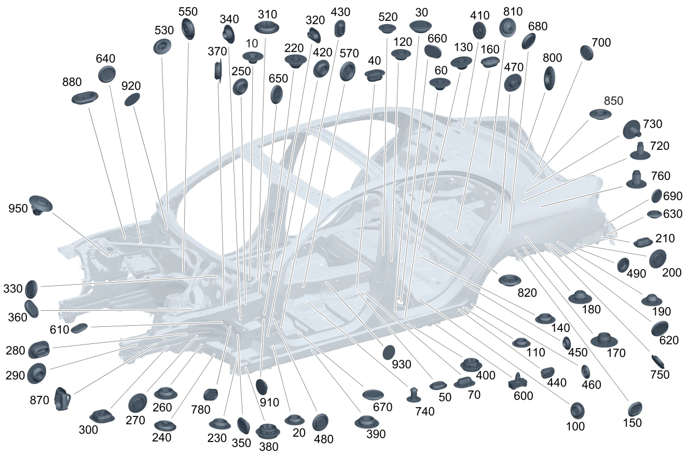

| № | Артикул | Название | Кол. | Примечание | Ограничение |
|---|---|---|---|---|---|
| 10 | A 000 998 09 90 | Пробка (GROMMET) | 1 | К туннелю трансмиссии; 20 MM | |
| 10 | A 003 998 13 50 | Пробка (STOP PLUG) | 1 | Туннель трансмиссии спереди посередине; 15 MM | |
| 20 | A 003 998 14 50 | Пробка (STOP PLUG) | 3 | Днище слева; 20 MM | |
| 20 | A 003 998 14 50 | Пробка (STOP PLUG) | 3 | Днище (правая сторона); 20 MM | |
| 20 | A 003 998 14 50 | Пробка (STOP PLUG) | 1 | Днище (задняя зона / правая сторона); 20 MM | |
| 20 | A 003 998 14 50 | Пробка (STOP PLUG) | 2 | Туннель трансмиссии посередине слева; 20 MM | |
| 30 | A 000 998 45 03 | Пробка (STOP PLUG) | 2 | Нижняя часть кузова (задняя левая сторона); 25 MM | |
| 30 | A 000 998 45 03 | Пробка (STOP PLUG) | 1 | Нижняя часть кузова (задняя правая сторона); 25 MM | |
| 30 | A 000 998 45 03 | Пробка (STOP PLUG) | 1 | Продольный несущий элемент посередине слева; 25 MM | |
| 30 | A 000 998 45 03 | Пробка (STOP PLUG) | 1 | Продольный несущий элемент посередине справа; 25 MM | |
| 40 | A 003 998 46 50 | Пробка (STOP PLUG) | 1 | Пол в задней части салона, слева; 15X25MM | |
| 40 | A 003 998 46 50 | Пробка (STOP PLUG) | 1 | Пол в задней части салона слева; 15X25MM | |
| 50 | A 000 998 06 90 | Запорная шайба (STOPPER WASHER) | 1 | Лонжерон сзади посередине слева; 20X30 MM | |
| 50 | A 000 998 06 90 | Запорная шайба (STOPPER WASHER) | 1 | Лонжерон сзади посередине справа; 20X30 MM | |
| 60 | A 001 998 51 50 | Пробка (STOP PLUG) | 1 | Основное днище (задняя левая зона / внешняя сторона); 10 MM | |
| 60 | A 003 998 14 50 | Пробка (STOP PLUG) | 1 | Продольный несущий элемент посередине справа; 20 MM | |
| 60 | A 001 998 51 50 | Пробка (STOP PLUG) | 1 | Продольный несущий элемент посередине слева; 10 MM | |
| 60 | A 001 998 51 50 | Пробка (STOP PLUG) | 1 | Продольный несущий элемент посередине справа; 10 MM | |
| 70 | A 002 998 56 50 | Пробка (STOP PLUG) | 1 | Продольный несущий элемент посередине слева; 10 X 20MM | |
| 70 | A 002 998 56 50 | Пробка (STOP PLUG) | 1 | Продольный несущий элемент посередине справа; 10 X 20MM | |
| 110 | A 003 998 14 50 | Пробка (STOP PLUG) | 1 | Продольный несущий элемент сзади, снаружи слева; 20 MM | |
| 110 | A 003 998 14 50 | Пробка (STOP PLUG) | 1 | Продольный несущий элемент сзади, снаружи справа; 20 MM | |
| 110 | A 003 998 14 50 | Пробка (STOP PLUG) | 1 | Продольный несущий элемент сзади слева; 20 MM | |
| 110 | A 003 998 14 50 | Пробка (STOP PLUG) | 1 | Продольный несущий элемент сзади справа; 20 MM | |
| 110 | A 003 998 14 50 | Пробка (STOP PLUG) | 1 | Лонжерон сзади посередине слева; 20 MM | |
| 120 | A 003 998 13 50 | Пробка (STOP PLUG) | 1 | Пол в задней части салона посередине; 15 MM | |
| 130 | A 001 998 51 50 | Пробка (STOP PLUG) | 1 | Пол в задней части салона посередине; 10 MM | |
| 130 | A 001 998 51 50 | Пробка (STOP PLUG) | 1 | Пол в задней части салона, слева; 10 MM | |
| 130 | A 001 998 51 50 | Пробка (STOP PLUG) | 1 | Пол в задней части салона слева; 10 MM | |
| 140 | A 003 998 14 50 | Пробка (STOP PLUG) | 1 | Пол в задней части салона слева; 20 MM | |
| 140 | A 003 998 14 50 | Пробка (STOP PLUG) | 1 | Колесная арка слева; 20 MM | |
| 140 | A 003 998 14 50 | Пробка (STOP PLUG) | 1 | Колесная арка справа; 20 MM | |
| 140 | A 003 998 14 50 | Пробка (STOP PLUG) | 1 | Колесная арка спереди слева; 20 MM | |
| 140 | A 003 998 14 50 | Пробка (STOP PLUG) | 1 | Колесная арка спереди справа; 20 MM | |
| 140 | A 003 998 14 50 | Пробка (STOP PLUG) | 1 | Колесная арка сзади слева; 20 MM | |
| 140 | A 003 998 14 50 | Пробка (STOP PLUG) | 1 | Колесная арка сзади справа; 20 MM | |
| 150 | A 000 998 06 90 | Запорная шайба (STOPPER WASHER) | 1 | Колесная арка слева; 20X30 MM | |
| 150 | A 000 998 06 90 | Запорная шайба (STOPPER WASHER) | 1 | Колесная арка справа; 20X30 MM | |
| 150 | A 000 998 06 90 | Запорная шайба (STOPPER WASHER) | 1 | Колесная арка сзади слева; 20X30 MM | |
| 150 | A 000 998 06 90 | Запорная шайба (STOPPER WASHER) | 1 | Колесная арка сзади справа; 20X30 MM | |
| 160 | A 003 998 46 50 | Пробка (STOP PLUG) | 1 | Пол задней части кузова посередине; 15X25MM | |
| 170 | A 000 998 10 90 | Пробка (GROMMET) | 1 | Поперечина сзади, слева; 25 MM | |
| 170 | A 000 998 10 90 | Пробка (GROMMET) | 1 | Поперечина сзади, справа; 25 MM | |
| 190 | A 001 998 51 50 | Пробка (STOP PLUG) | 1 | Продольный несущий элемент сзади слева; 10 MM | |
| 190 | A 001 998 51 50 | Пробка (STOP PLUG) | 1 | Продольный несущий элемент сзади справа; 10 MM | |
| 200 | A 003 998 14 50 | Пробка (STOP PLUG) | 1 | Продольный несущий элемент сзади слева; 20 MM | |
| 200 | A 003 998 14 50 | Пробка (STOP PLUG) | 1 | Продольный несущий элемент сзади справа; 20 MM | |
| 200 | A 003 998 14 50 | Пробка (STOP PLUG) | 1 | Лонжерон задний правый (задняя зона); 20 MM | |
| 210 | A 002 998 56 50 | Пробка (STOP PLUG) | 1 | Лонжерон задний левый (задняя зона); 10 X 20MM | |
| 210 | A 002 998 56 50 | Пробка (STOP PLUG) | 1 | Лонжерон задний правый (задняя зона); 10 X 20MM | |
| 220 | A 001 998 51 50 | Пробка (STOP PLUG) | 1 | Поперечина (внешняя правая сторона); 10 MM | |
| 220 | A 001 998 51 50 | Пробка (STOP PLUG) | 1 | Поперечина (внутренняя правая сторона); 10 MM | |
| 220 | A 001 998 51 50 | Пробка (STOP PLUG) | 1 | Поперечина (внешняя левая сторона); 10 MM | |
| 220 | A 001 998 51 50 | Пробка (STOP PLUG) | 1 | Поперечина (внутренняя левая сторона); 10 MM | |
| 230 | A 003 998 14 50 | Пробка (STOP PLUG) | 1 | Поперечина (внешняя левая сторона); 20 MM | |
| 230 | A 003 998 14 50 | Пробка (STOP PLUG) | 1 | Поперечина (внешняя правая сторона); 20 MM | |
| 240 | A 000 998 46 03 | Пробка (STOP PLUG) | 1 | Поперечина (внешняя левая сторона); 30 MM | |
| 240 | A 000 998 46 03 | Пробка (STOP PLUG) | 1 | Поперечина (внешняя правая сторона); 30 MM | |
| 250 | A 003 998 14 50 | Пробка (STOP PLUG) | 1 | Продольный несущий элемент изнутри слева; 20 MM | |
| 250 | A 003 998 14 50 | Пробка (STOP PLUG) | 1 | Продольный несущий элемент изнутри справа; 20 MM | |
| 260 | A 003 998 14 50 | Пробка (STOP PLUG) | 1 | Лонжерон (передний левый нижний); 20 MM | |
| 260 | A 003 998 14 50 | Пробка (STOP PLUG) | 1 | Лонжерон спереди слева; 20 MM | |
| 260 | A 003 998 14 50 | Пробка (STOP PLUG) | 1 | Лонжерон передний правый (нижняя сторона); 20 MM | |
| 260 | A 003 998 14 50 | Пробка (STOP PLUG) | 1 | Лонжерон спереди справа; 20 MM | |
| 270 | A 003 998 14 50 | Пробка (STOP PLUG) | 1 | Продольный несущий элемент спереди снаружи слева; 20 MM | |
| 270 | A 003 998 14 50 | Пробка (STOP PLUG) | 1 | Продольный несущий элемент спереди снаружи справа; 20 MM | |
| 270 | A 003 998 14 50 | Пробка (STOP PLUG) | 1 | Лонжерон передний левый (внутренняя сторона); 20 MM | |
| 270 | A 003 998 14 50 | Пробка (STOP PLUG) | 1 | Лонжерон передний правый (внутренняя сторона); 20 MM | |
| 270 | A 003 998 14 50 | Пробка (STOP PLUG) | 1 | Лонжерон (передний левый нижний); 20 MM | |
| 270 | A 003 998 14 50 | Пробка (STOP PLUG) | 1 | Лонжерон передний правый (нижняя сторона); 20 MM | |
| 270 | A 003 998 14 50 | Пробка (STOP PLUG) | 1 | Лонжерон спереди слева; 20 MM | |
| 270 | A 003 998 14 50 | Пробка (STOP PLUG) | 1 | Лонжерон спереди справа; 20 MM | |
| 270 | A 003 998 14 50 | Пробка (STOP PLUG) | 1 | Колесная арка сзади слева и справа; 20 MM | |
| 280 | A 003 998 46 50 | Пробка (STOP PLUG) | 1 | Лонжерон передний левый (внутренняя сторона); 15X25MM | |
| 280 | A 003 998 46 50 | Пробка (STOP PLUG) | 1 | Лонжерон передний правый (внутренняя сторона); 15X25MM | |
| 290 | A 003 998 13 50 | Пробка (STOP PLUG) | 1 | Лонжерон передний левый (внутренняя сторона); 15 MM | |
| 290 | A 003 998 13 50 | Пробка (STOP PLUG) | 1 | Лонжерон передний правый (внутренняя сторона); 15 MM | |
| 300 | A 000 998 44 03 | PLUG (STOP PLUG) | 1 | Продольный несущий элемент внизу слева | |
| 300 | A 000 998 44 03 | PLUG (STOP PLUG) | 1 | Продольный несущий элемент внизу справа | |
| 310 | A 000 998 46 03 | Пробка (STOP PLUG) | 1 | Под ветровым стеклом, слева; 30 MM | |
| 310 | A 000 998 46 03 | Пробка (STOP PLUG) | 1 | Под ветровым стеклом, справа; 30 MM | |
| 320 | A 002 998 56 50 | Пробка (STOP PLUG) | 1 | Пространство для ног слева; 10 X 20MM | |
| 320 | A 002 998 56 50 | Пробка (STOP PLUG) | 1 | Пространство для ног справа; 10 X 20MM | |
| 320 | A 002 998 56 50 | Пробка (STOP PLUG) | 1 | Моторный щит посередине; 10 X 20MM | |
| 330 | A 000 998 46 03 | Пробка (STOP PLUG) | 1 | Моторный щит, слева; 30 MM | |
| 330 | A 000 998 46 03 | Пробка (STOP PLUG) | 1 | Моторный щит, справа; 30 MM | |
| 340 | A 003 998 13 50 | Пробка (STOP PLUG) | 1 | Пространство для ног слева; 15 MM | |
| 340 | A 003 998 13 50 | Пробка (STOP PLUG) | 1 | Пространство для ног справа; 15 MM | |
| 350 | A 000 998 06 90 | Запорная шайба (STOPPER WASHER) | 1 | Колесная арка сзади слева и справа; 20X30 MM | |
| 360 | A 000 998 34 90 | Пробка (STOP PLUG) | 1 | Туннель коробки передач спереди слева; 42.2X26.2MM | |
| 360 | A 000 998 34 90 | Пробка (STOP PLUG) | 1 | Туннель трансмиссии спереди справа; 42.2X26.2MM | |
| 370 | A 003 998 14 50 | Пробка (STOP PLUG) | 1 | Пространство для ног слева; 20 MM | |
| 380 | A 001 998 55 01 | Сливная втулка (WATER DRAIN GROMMET) | 1 | Лонжерон спереди слева; 25MM | |
| 380 | A 001 998 55 01 | Сливная втулка (WATER DRAIN GROMMET) | 1 | Лонжерон спереди справа; 25MM | |
| 390 | A 003 998 14 50 | Пробка (STOP PLUG) | 1 | Лонжерон спереди слева; 20 MM | |
| 390 | A 003 998 14 50 | Пробка (STOP PLUG) | 1 | Лонжерон спереди справа; 20 MM | |
| 390 | A 003 998 14 50 | Пробка (STOP PLUG) | 1 | Продольный несущий элемент посередине слева; 20 MM | |
| 390 | A 003 998 14 50 | Пробка (STOP PLUG) | 1 | Продольный несущий элемент посередине справа; 20 MM | |
| 390 | A 003 998 14 50 | Пробка (STOP PLUG) | 1 | Продольный несущий элемент слева; 20 MM | |
| 390 | A 003 998 14 50 | Пробка (STOP PLUG) | 1 | Продольный несущий элемент справа; 20 MM | |
| 390 | A 003 998 14 50 | Пробка (STOP PLUG) | 1 | Продольный несущий элемент слева, сзади; 20 MM | |
| 390 | A 003 998 14 50 | Пробка (STOP PLUG) | 1 | Продольный несущий элемент справа, сзади; 20 MM | |
| 390 | A 003 998 14 50 | Пробка (STOP PLUG) | 1 | Продольный несущий элемент сзади слева; 20 MM | |
| 390 | A 003 998 14 50 | Пробка (STOP PLUG) | 1 | Продольный несущий элемент сзади справа; 20 MM | |
| 400 | A 001 998 55 01 | Сливная втулка (WATER DRAIN GROMMET) | 1 | Продольный несущий элемент сзади слева; 25MM | |
| 400 | A 001 998 55 01 | Сливная втулка (WATER DRAIN GROMMET) | 1 | Продольный несущий элемент сзади справа; 25MM | |
| 400 | A 001 998 55 01 | Сливная втулка (WATER DRAIN GROMMET) | 1 | Продольный несущий элемент слева, сзади; 25MM | |
| 400 | A 001 998 55 01 | Сливная втулка (WATER DRAIN GROMMET) | 1 | Продольный несущий элемент справа, сзади; 25MM | |
| 410 | A 001 998 51 50 | Пробка (STOP PLUG) | 1 | К поперечине снаружи справа; 10 MM | |
| 410 | A 001 998 51 50 | Пробка (STOP PLUG) | 1 | К поперечине изнутри справа; 10 MM | |
| 410 | A 001 998 51 50 | Пробка (STOP PLUG) | 1 | К поперечине изнутри слева; 10 MM | |
| 410 | A 001 998 51 50 | Пробка (STOP PLUG) | 1 | К поперечине снаружи слева; 10 MM | |
| 420 | A 003 998 14 50 | Пробка (STOP PLUG) | 2 | Продольный несущий элемент спереди изнутри слева; 20 MM | |
| 420 | A 003 998 14 50 | Пробка (STOP PLUG) | 2 | Продольный несущий элемент спереди изнутри справа; 20 MM | |
| 420 | A 003 998 14 50 | Пробка (STOP PLUG) | 3 | Продольный несущий элемент посередине изнутри слева; 20 MM | |
| 420 | A 003 998 14 50 | Пробка (STOP PLUG) | 3 | Продольный несущий элемент посередине изнутри справа; 20 MM | |
| 420 | A 003 998 14 50 | Пробка (STOP PLUG) | 1 | Лонжерон задний левый (внутренняя сторона); 20 MM | |
| 420 | A 003 998 14 50 | Пробка (STOP PLUG) | 1 | Лонжерон задний правый (внутренняя сторона); 20 MM | |
| 430 | A 002 998 56 50 | Пробка (STOP PLUG) | 1 | Продольный несущий элемент спереди изнутри слева; 10 X 20MM | |
| 430 | A 002 998 56 50 | Пробка (STOP PLUG) | 1 | Продольный несущий элемент спереди изнутри справа; 10 X 20MM | |
| 440 | A 003 998 46 50 | Пробка (STOP PLUG) | 1 | Продольный несущий элемент сзади слева; 15X25MM | |
| 440 | A 003 998 46 50 | Пробка (STOP PLUG) | 1 | Продольный несущий элемент сзади справа; 15X25MM | |
| 450 | A 003 998 14 50 | Пробка (STOP PLUG) | 1 | Колесная арка сзади слева; 20 MM | |
| 450 | A 003 998 14 50 | Пробка (STOP PLUG) | 1 | Колесная арка сзади справа; 20 MM | |
| 450 | A 003 998 14 50 | Пробка (STOP PLUG) | 1 | Колесная арка задняя левая, передняя часть; 20 MM | |
| 450 | A 003 998 14 50 | Пробка (STOP PLUG) | 1 | Колесная арка задняя правая, передняя часть; 20 MM | |
| 450 | A 003 998 14 50 | Пробка (STOP PLUG) | 1 | Накладка левой колёсной арки (задняя сторона); 20 MM | |
| 450 | A 003 998 14 50 | Пробка (STOP PLUG) | 1 | Накладка правой колёсной арки (задняя сторона); 20 MM | |
| 450 | A 003 998 14 50 | Пробка (STOP PLUG) | 1 | Колесная арка сзади сверху слева; 20 MM | |
| 450 | A 003 998 14 50 | Пробка (STOP PLUG) | 1 | Колёсная арка (задняя левая / центральная зона); 20 MM | |
| 450 | A 003 998 14 50 | Пробка (STOP PLUG) | 1 | Колесная арка сзади сверху справа; 20 MM | |
| 450 | A 003 998 14 50 | Пробка (STOP PLUG) | 1 | Outer left rear wheel arch cover; 20 MM | |
| 450 | A 003 998 14 50 | Пробка (STOP PLUG) | 1 | Outer right rear wheel arch cover; 20 MM | |
| 460 | A 000 998 46 03 | Пробка (STOP PLUG) | 1 | Колесная арка спереди слева; сверху; 30 MM | |
| 460 | A 000 998 46 03 | Пробка (STOP PLUG) | 1 | Колесная арка спереди справа; сверху; 30 MM | |
| 470 | A 000 998 12 90 | Пробка (GROMMET) | 1 | Задняя стойка изнутри слева; 20X25 MM | |
| 470 | A 000 998 12 90 | Пробка (GROMMET) | 1 | Задняя стойка изнутри справа; 20X25 MM | |
| 480 | A 000 998 45 03 | Пробка (STOP PLUG) | 1 | Передняя стойка слева, снаружи; 25 MM | |
| 480 | A 000 998 45 03 | Пробка (STOP PLUG) | 1 | Передняя стойка справа, снаружи; 25 MM | |
| 490 | A 110 987 09 44 | Диск (WINDOW) | 1 | Боковина сзади слева; 26.5 MM | |
| 490 | A 110 987 09 44 | Диск (WINDOW) | 1 | Боковина сзади справа; 26.5 MM | |
| 520 | A 003 998 14 50 | Пробка (STOP PLUG) | 1 | Пол в задней части салона посередине; 20 MM | |
| 530 | A 000 998 27 04 | Пробка (STOP PLUG) | 3 | Поперечина под ветровым стеклом | |
| 550 | A 000 998 28 04 | Пробка (STOP PLUG) | 1 | К моторному щиту | |
| 570 | A 000 998 28 04 | Пробка (STOP PLUG) | 2 | Туннель трансмиссии, слева | |
| 570 | A 000 998 28 04 | Пробка (STOP PLUG) | 2 | Туннель трансмиссии, справа | |
| 600 | A 204 690 00 09 | Зажим домкрата (FIXTURE FOR JACK) | 2 | Опора домкрата, слева | |
| 600 | A 204 690 00 09 | Зажим домкрата (FIXTURE FOR JACK) | 2 | Опора домкрата, справа | |
| 610 | A 003 998 49 50 | Пробка (STOP PLUG) | 1 | Колесная арка сзади слева Рулевое управление: Влево | |
| 620 | A 003 998 17 50 | Пробка (STOP PLUG) | 1 | Колесная арка сзади слева | |
| 620 | A 003 997 58 86 | Пробка (GROMMET) | 1 | Колесная арка сзади справа | |
| 620 | A 000 998 43 07 | Пробка (STOP PLUG) | 1 | Колесная арка сзади справа | |
| 630 | A 003 998 14 50 | Пробка (STOP PLUG) | 1 | Продольный несущий элемент сзади слева; 20 MM | |
| 640 | A 001 998 81 50 | Пробка (STOP PLUG) | 1 | Боковина спереди справа; 40 MM | |
| 640 | A 001 998 81 50 | Пробка (STOP PLUG) | 1 | Боковина спереди справа; 40 MM | |
| 650 | A 001 998 81 50 | Пробка (STOP PLUG) | 1 | Туннель трансмиссии, слева; 40 MM | |
| 650 | A 001 998 81 50 | Пробка (STOP PLUG) | 1 | Туннель трансмиссии, слева; 40 MM | (805+055)/806/807 |
| 650 | A 001 998 81 50 | Пробка (STOP PLUG) | 1 | Туннель трансмиссии, слева; 40 MM | |
| 660 | A 003 998 24 50 | Пробка (STOP PLUG) | 1 | Поперечина заднего сиденья слева | |
| 670 | A 003 997 68 86 | Пробка (STOP PLUG) | 1 | Днище спереди справа; 35 MM | |
| 670 | A 003 997 68 86 | Пробка (STOP PLUG) | 1 | Днище (задняя зона / правая сторона); 35 MM | |
| 670 | A 003 997 68 86 | Пробка (STOP PLUG) | 1 | Днище спереди слева; 35 MM | |
| 680 | A 003 997 68 86 | Пробка (STOP PLUG) | 1 | Колесная арка сзади слева; 35 MM | |
| 680 | A 003 997 68 86 | Пробка (STOP PLUG) | 1 | Колесная арка сзади справа; 35 MM | |
| 690 | A 003 998 14 50 | Пробка (STOP PLUG) | 1 | Поперечина (задняя центральная); 20 MM | |
| 690 | A 003 998 17 50 | Пробка (STOP PLUG) | 1 | Боковина сзади слева | |
| 690 | A 001 998 74 50 | Пробка (STOP PLUG) | 1 | Боковина сзади справа | |
| 700 | A 003 997 58 86 | Пробка (GROMMET) | 1 | Пол задней части кузова (задняя правая сторона / внешняя зона) | |
| 700 | A 000 998 43 07 | Пробка (STOP PLUG) | 1 | Пол задней части кузова (задняя правая сторона / внешняя зона) | |
| 720 | A 003 998 63 50 | Пробка (STOP PLUG) | 3 | Продольный несущий элемент сзади справа | |
| 730 | A 003 998 63 50 | Пробка (STOP PLUG) | 2 | Продольный несущий элемент сзади справа | M254 |
| 730 | A 003 998 63 50 | Пробка (STOP PLUG) | 2 | Продольный несущий элемент сзади справа | M254+M20+1U2 |
| 740 | A 000 998 18 55 | Уплотнительная пробка (SEALING PLUG) | 5 | К продольному несущему элементу снизу слева и справа; 8.6 MM | |
| 740 | A 000 998 18 55 | Уплотнительная пробка (SEALING PLUG) | 5 | К продольному несущему элементу снизу слева и справа; 8.6 MM | |
| 750 | A 000 998 45 03 | Пробка (STOP PLUG) | 2 | К колесной арке слева и справа; 25 MM | |
| 780 | A 003 998 49 50 | Пробка (STOP PLUG) | 1 | Чашка амортизационной стойки слева | |
| 800 | A 000 998 27 04 | Пробка (STOP PLUG) | 2 | Шумоизоляционный элемент на задней части кузова (центральный верхний) | |
| 810 | A 000 998 27 04 | Пробка (STOP PLUG) | 1 | Задняя стойка изнутри слева | |
| 810 | A 000 998 27 04 | Пробка (STOP PLUG) | 1 | Задняя стойка изнутри справа | |
| 820 | A 000 998 28 04 | Пробка (STOP PLUG) | 1 | Шумоизоляционный элемент на поперечине под задним сиденьем (верхняя сторона) | |
| 820 | A 002 998 63 50 | Пробка (STOP PLUG) | 4 | Шумоизоляционный элемент на поперечине под задним сиденьем (нижняя сторона) | |
| 850 | A 000 998 27 04 | Пробка (STOP PLUG) | 1 | Шумоизоляционный элемент на поперечине пола грузового отделения (нижняя сторона) | |
| 850 | A 000 998 27 04 | Пробка (STOP PLUG) | 2 | Шумоизоляционный элемент на задней поперечине заднего моста (верхняя сторона) | |
| 850 | A 000 998 78 50 | Пробка (STOP PLUG) | 1 | Шумоизоляционный элемент на задней поперечине заднего моста (нижняя сторона); 10MM | |
| 870 | A 206 505 44 00 | Уплотнительная манжета (SEALING BOOT) | 1 | Шланг системы охлаждения (передний левый) Рулевое управление: Влево | |
| 910 | A 000 987 51 44 | Запорная шайба (STOPPER WASHER) | 1 | К передней стойке слева | |
| 910 | A 000 987 51 44 | Запорная шайба (STOPPER WASHER) | 1 | К передней стойке справа | |
| 920 | A 000 989 18 07 | Отрез клейкой ленты (ADHESIVE TAPE PRECUT PART) | 6 | Поперечина под ветровым стеклом | |
| 920 | A 000 989 18 07 | Отрез клейкой ленты (ADHESIVE TAPE PRECUT PART) | 1 | К моторному щиту | |
| 930 | A 000 989 18 07 | Отрез клейкой ленты (ADHESIVE TAPE PRECUT PART) | 4 | Туннель трансмиссии, слева | |
| 930 | A 000 989 18 07 | Отрез клейкой ленты (ADHESIVE TAPE PRECUT PART) | 4 | Туннель трансмиссии, справа |
Позиций: 191 · подписано на схемах: 191 · колесо — плавный зум в курсор, перетаскивание — пан, двойной клик — зум, клик по артикулу — скопировать · наведите на строку или цифру на схеме — подсветка связки, клик — закрепить.